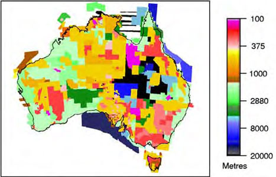
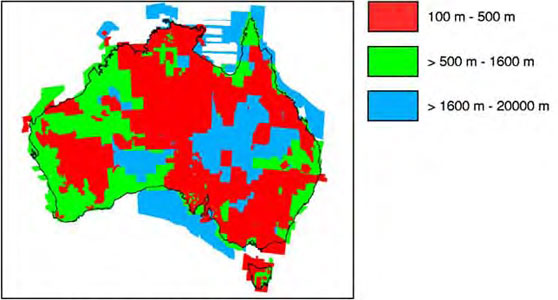
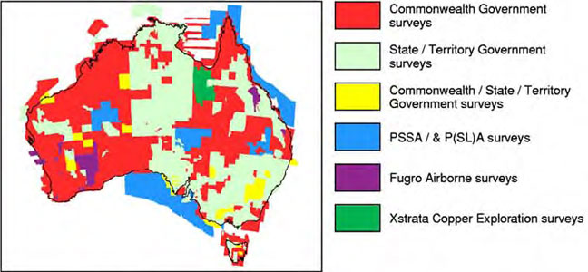
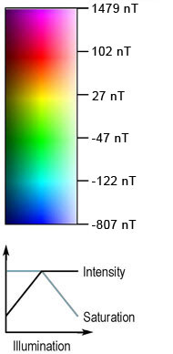

PREFACE:
This edition of the Magnetic Anomaly Map
of Australia results from a completely new compilation of Total Magnetic
Intensity (TMI) grid data. It has been produced using a new method of
matching the individual survey grids and the use of independent data to
help constrain long wavelengths. 680 individual grids have been matched
and merged into the composite used to produce this image, with the
resolution of each grid optimal for the specifications of the source
survey line data. Since the Third Edition (Milligan and Tarlowski,
1999), data from many new surveys have been added, acquired mainly by
the State and Territory geological surveys. It is estimated that 19
million line-kilometres of survey data were acquired to produce the grid
data, 10 million line-kilometres more than for the third edition.
EXPLANATORY NOTES:
This image was compiled from
Total Magnetic Intensity survey data held in the National Airborne
Geophysical Database by Geoscience Australia. The image is a composite
of data acquired from surveys flown by Geoscience Australia, and surveys
flown under contract to Geoscience Australia, the State and Territory
geological surveys in either separate or joint projects and the private
sector. The source data are used with their permission. The data from
these surveys were acquired at a range of line spacings (see diagrams
below), flying heights, and measurement accuracies (Richardson, 2004).
The map also incorporates marine magnetic data from research surveys by
Geoscience Australia (Petkovic and Milligan, 2002) and foreign
institutions.

All survey line spacings

All survey line spacing ranges
The data supplied by the New South Wales Department of Primary Industries; Department of Business, Industry and Resources Development Northern Territory; Natural Resources and Mines Queensland; Department of Primary Industries and Resources South Australia; Department of Infrastructure, Energy and Resources Tasmania; Department of Primary Industries Victoria and Department of Industry and Resources Western Australia (see diagram below) were acquired at an altitude of 100 m or less along lines spaced 500 m apart or less.

Survey ownership
For each survey, the International Geomagnetic Reference Field for the relevant epoch was removed, and a grid created with a cell size of approximately one fifth of the survey line spacing, using the minimum curvature method of Briggs (1974). Some grids were subjected to micro-levelling (Minty, 1991). The gridded data from all the surveys were joined together using a two-stage method, based on the data differences in the overlap regions between adjacent surveys. Initially, a base-shift was applied to each survey to minimise the global set of differences between adjacent surveys. An iterative process was then applied, removing a plane surface from selected surveys to minimise the differences between it and its neighbours. During this iterative process, the base levels of those grids that overlapped with an independent dataset, the Australia Wide Array of Geomagnetic Stations (AWAGS) airborne magnetic data, were constrained by the AWAGS data, to help improve the accuracy of long wavelength information (Minty et al, 2003; Milligan et al, 2001). Remaining high-frequency differences between the grids were smoothed out using a convolution operator. The final grid was created by interpolating all of the data into one grid, with a cell size of 7.2 seconds of arc, which was then reprojected to the Lambert Conformal Conic projection with a cell size of 250 m.
The image was generated from the natural colour palette (magenta high - blue low) using histogram equalisation. To emphasise the expression of short-wavelength anomalies, an artificial illumination was applied from the northeast. The output of the sun-angle image was used to modulate the colour intensity and saturation of the initial colour image in the Hue, Saturation, Value colour space (Milligan et al, 1992).
REFERENCES:
Briggs, I.C., 1974,
Machine contouring using minimum curvature: Geophysics, 39,
39-48.
Milligan, P.R., Morse, M.P. and Rajogopalan, S., 1992,
Pixel map preparation using the HSV colour model: Exploration
Geophysics, 23, 219-224
Milligan, P.R. and
Tarlowski, C., 1999,
Magnetic Map of Australia, (Third Ed.) 1:5 000 000 scale,
Australian Geological survey Organisation, Canberra.
Milligan,
P.R., Minty, B.R.S., Luyendyk, A.P.J. and Lewis, A.M., 2001,
Comparisons of total magnetic intensity grids, combined using
Gridmerge, with two independent datasets: Geoscience Australia Record
2001/43.
Minty, B.R.S., 1991,
Simple micro-levelling for aeromagnetic data: Exploration
Geophysics, 22, 591-592.
Minty, B.R.S.,
Milligan, P.R., Luyendyk, T. and Mackey, T., 2003,
Merging airborne magnetic surveys into continental-scale
compilations: Geophysics, 63, 1986-1996
Petkovic, P. and Milligan, P.R., 2002,
Magnetic Anomaly Grid of the Austrialian Region, 3.1, (CD-ROM).
Geoscience Australia
Richardson, L.M., 2004,
Index of Airborne Geophysical Surveys, (Eighth Ed.): Geoscience
Australia Record 2004/08.
We thank the following:
Xstrata Copper Exploration for
allowing the inclusion of their survey data across the Mount Isa Inlier.
Fugro Geophysical Surveys for allowing the inclusion of some of their
survey data in Queensland and Western Australia.
Compiled by the Geophysical Acquisition and Databases Project, Geoscience Australia. Data processing by R. Franklin, P.R. Milligan. Image enhancement and index maps by P.R. Milligan.
It is recommended that this map be referred to as: Milligan, P.R.
and Franklin, R., 2004.
Magnetic Anomaly Map of Australia
(Fourth Ed.), 1:5 000 000 scale, Geoscience Australia, Canberra.
Composite TMI grid data at 250 m and 400 m cell sizes are available for free download via the internet using Geoscience Australia's Geophysical Archive Data Delivery System (GADDS) at: http://www.geoscience.gov.au/gadds
Further information can also be found on the Internet at: http://www.ga.gov.au
© Commonwealth of Australia 2004.
This work is copyright. Apart from any fair dealings for the
purposes of study, research, criticism or review, as permitted under the
Copyright Act, no part may be reproduced by any process without written
permission.
Inquiries should be directed to the Communications
Unit, Geoscience Australia, GPO Box 378, Canberra, ACT, 2601.
Geoscience Australia has tried to make the information in this product as accurate as possible. However, it does not guarantee that the information is totally accurate or complete. THEREFORE YOU SHOULD NOT RELY SOLELY ON THIS INFORMATION WHEN MAKING A COMMERCIAL DECISION.
Published by Geoscience Australia, Department of Industry, Tourism and Resources, Canberra, Australia. Issued under the authority of the Federal Minister for Industry, Tourism and Resources. Inquiries regarding the availability of digital data should be made to Geoscience Australia. It is possible to display the data at scales that reveal significantly more detail than shown in this image.
Further information may be obtained by contacting copyright@ga.gov.au
Copies of this map may be downloaded from the
Geoscience Australia internet site at:
http://www.ga.gov.au, or by
contacting:
Sales Centre - Geoscience Australia
GPO Box 378 Canberra, ACT 2601
Phone (02) 6249 9966
Facsimile (02) 6249 9960
Email:
sales@ga.gov.au